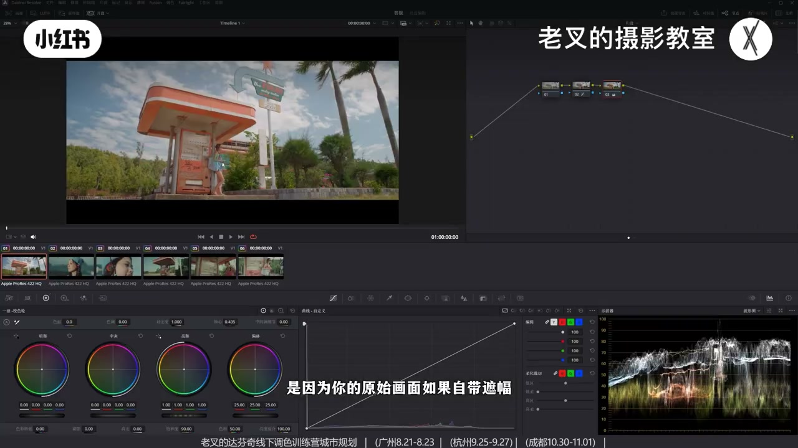
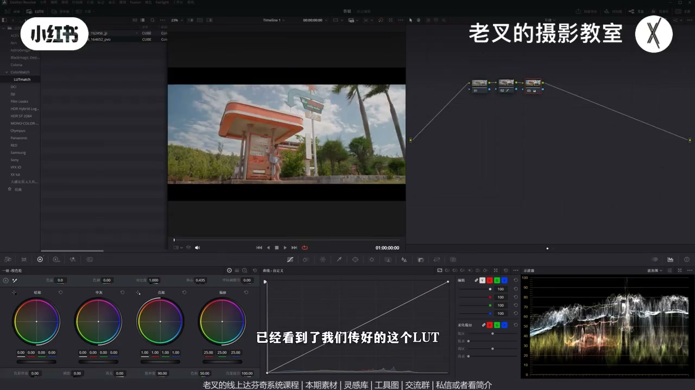
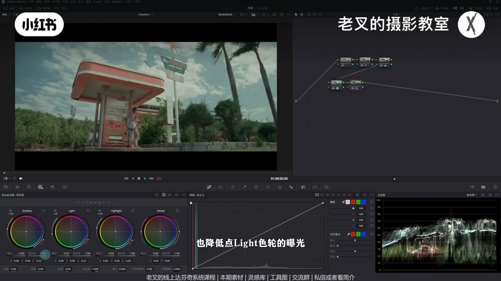
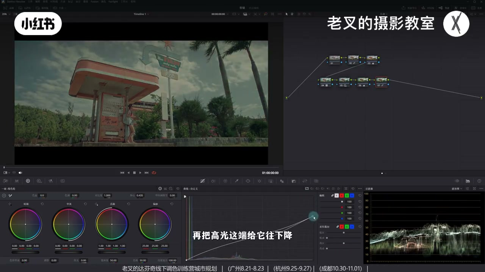
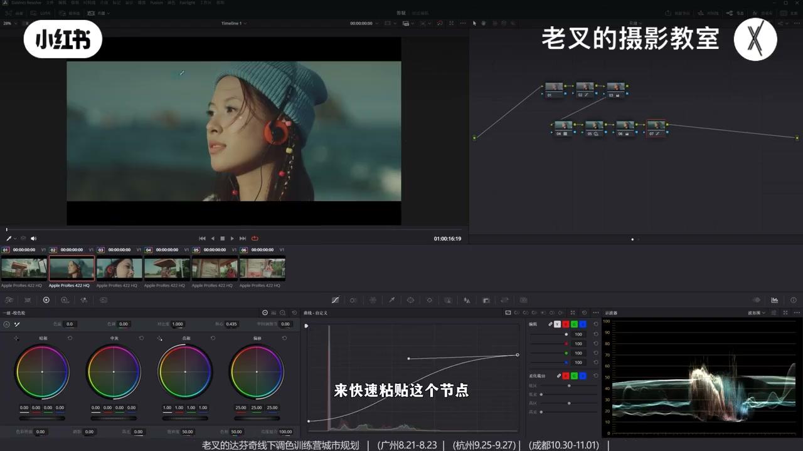

内容要点
回应上期风格怎么仿：用一键仿色工具生成 LUT 进达芬奇做风格起点，再少节点收尾——HDR 压中灰、一级轮亮暖暗冷、柔和对比度样条线。LUT 默认力度保守；传图避开黑边防发灰。风格可粘贴到多镜头，肤色可用并行节点微调。
知识结构
还原图上传；避开黑边，否则工具把黑位计入导致发灰。
生成并发送到达芬奇；拖入后有风格但力度常偏弱。
降 Shadow/Light 压中灰，抬 Highlight 保光感，对齐参考影调。
一级轮亮暖中灰回调暗部冷；柔和对比度可编辑样条线。
应用调色到其他镜头；并行节点微调肤色可选用。
自动仿色给风格基底，手搓只负责收尾：先 HDR 对齐中灰与光感，再一级轮冷暖与柔和对比度。LUT 不会一步到位，也不必一步到位。
00:00-00:47用自动仿色试风格：传还原图，避开黑边
上期发出后有人问风格怎么仿。他用自动仿色工具，以很少节点快速做出接近风格。流程：工具里上传已还原画面（不要灰片）。有人做出发灰，常因原始画面自带黑边，工具把黑边算进去抬黑位——已在修，传图时要避开黑边只截有效画面；参考图同理。

00:47-01:18生成 LUT → 发送到达芬奇 → 拖入节点
微调参数后点生成 LUT，再发送到达芬奇（流程见往期）。LUT 库刷新后拖到节点，画面立刻有风格，但力度往往不够——作者为通用性故意没把默认力度做很大，需要后续节点补到参考效果。

01:18-01:59HDR：压中灰、抬 Highlight，对齐参考影调
波形上参考图中灰往暗走。新节点用 HDR：略降 Shadow 与 Light，让中灰下压；同时略抬 Highlight 并微调范围，避免光感丢太多。曝光接近后，再进入颜色。

01:59-02:53一级轮亮暖暗冷 + 柔和对比度样条线
参考有阳光：高光偏暖、其余偏冷；本素材阳光不足，用一级校色轮：亮部左上偏暖，中灰右下回调，暗部略右下带回一点冷。再上柔和对比度：可编辑样条线，高光端下降、高光延伸波谷上提，暗部上提、暗部波谷下压。不必像素级一致，重在模拟强风格。

02:53-04:14人物可补遮罩；粘贴到其他镜头；肤色并行微调
若人物偏暗，可在链路前加遮罩略提亮。素材在知识分享平台可私信或看简介加入免费自取；一键做 LUT 工具免费。调完用滚轮或右键「应用调色」粘到其他镜头，风格感很强。肤色若偏蜡黄，可在 LUT 节点后 Shift/Option+P 建并行，用色轮略加红——可调可不调。

完整转录（155段）
以下文本由 Whisper medium 模型自动转录，可能存在少量识别误差，已尽可能修正。
上期视频发出去之后呢
有朋友想要知道这种风格该怎么仿呢
这一期我们用自动仿色工具来试一试
我们手上有这几个片段
我们通过自动仿色
用了非常非常少的节点
给它快速做出了一种风格
效果还是挺不错的
对不对
那这要怎么做呢
我们来到我们这个一键仿色的工具
我们需要在这个工具中
传上我们已经还原好的画面
不要是灰片
但之前有位朋友说
做出来的这个画面会有点发灰
有一个原因是因为
你的原始画面如果自带遮浮
那这个工具就会把你的黑边也计算在内
就会让你的黑位往上提
从而显得发灰
那这个呢已经在解决了
所以我们在传途都是要避开黑边
只截取画面中有效的部分
那当然我们的参考图也是一样的
传好了中呢稍微微调一下这些参数
这个参数你可以根据你自己的需求去慢慢修改
然后点击生成蜡烛
稍微等一下呢
它就能呈现出一个
比较接近的一个匹配结果
然后点击发送给达芬奇
这样它就会自动把生成好的蜡烛
传给达芬奇
这个操作流程之前出过一期视频
可以点主页看看往期的视频
然后再回到我们的达芬奇
此时我们在蜡烛库中已经看到了
我们传好的这个蜡烛
新建一个节点可以拉到第二排
把这个蜡烛拖到我们的节点上
那此时你看这个时候
画面就会呈现出一个风格对吧
但是力度是不够的
与参考图去做对比
你会发现我们的中晖部分太亮了
那这就是蜡烛的局限性
我为了保证这个蜡烛能够适用
绝大多数情况
所以我在做的时候力度就没有设置很大
那么我们就需要再建立几个节点
来继续调整
做到参考图的那种效果
从拨线图上来看
参考图的中晖是往暗部走的对吧
所以我们也可以再来一个节点
利用HT4轮来实现这个效果
稍微降低点Shadow色轮的曝光
也降低点Light色轮的曝光
那么这样一做
是不是让它中晖往暗部去走了
可是我们的高光
我们的光感也会失去比较多
所以我们需要再稍微提高点
Highlight色轮的曝光
微调一下这个范围
好 大概是这个情况
那此时我们从曝光上来讲
就跟它是比较接近了对吧
接下来就可以开始调颜色
因为参考图它是有阳光的
所以它的高光是偏暖
其他地方是偏冷
那我们这个画面阳光是不足的
所以我们需要再来个节点
利用色轮以及叫色轮
来给它做好这样的一个调整
首先是亮部色轮往左上角去移动一点
然后中晖色轮给它往右下做一定的回调
再是暗部色轮
也让它往右下去走一点点
给它的暗部稍微走回来一点来
大概是这样的一个结果
最后我们可以再来一个柔和对比度
打开曲线上角三个点中可编辑的一条线
再把高光这一端给它往下降
高光延伸出来的波感给它往上提
再把暗部稍微往上提一点
把暗部延伸出来的波感给它往下压
好 大概这样的一个情况
高光可以再下来一点
那么这样一条
我们就跟参考图是比较接近了对吧
当然你不可能一模一样
因为场景不一样 天气不一样
但是我们可以去模拟它这种风格
最重要的是
我们能够让我们的画面
带来一个极强的一个风格 对不对
效果还是非常好的
那当然这样的调整肯定是不完整的
虽然我们能快速做风格
但如果你觉得人物这部分太暗了
我们也可以在前面建立一个节点
给人物画一个遮罩
简单一画
然后稍微给它提亮一点
你像这种行为当然是可以做的
这一期的这几个素材
我都传到了现场分享平台
大家可以私信或者跟我姐姐来加入后免费自取
还有打分级的线上系统课程
线下调色训练营
这个一键做LUT的工具
当然也是免费的
那这一个画面调完了
我们自然是要粘给别的画面
我可以以它再做一个试力
先把节点给重置了
然后我们选中这个没调色的画面
用滚轮
如果你没有滚轮的话
也可以右键选择应用调色
来快速粘贴这个节点
你看粘贴完了
这个效果是非常非常好的 对吧
这是还原后的画面
这是我们调好后的画面
这种风格感是非常非常强的
但如果你觉得
皮肤的色相有点不对的话
我们可以在LUT这个节点
安卓二的加P或者是Option加P
建立一个并行节点
在这个地方
这个并行节点处可以用色轮
稍微微调一下它的肤色
让它稍微红一点
你看 这种结果
当然这个你可调可不调
我觉得稍微动一点点
让它不要那么蜡黄
这样一做
我们就把这个画面调完了
非常非常简单
而且整体的一个风格
也是非常好看的
因为你的参考图你是明确的
其他几个画面都是一样去粘贴
后面几个镜头就不一一演示了
工具大家可以多多使用
遇到任何问题都可以找我反馈
我都会尽可能的去优化
素材大家也别忘了
领取过去之后练练手